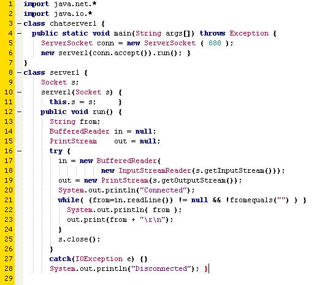

Torna alla pagina di Sistemi per l'elaborazione delle informazioni
:: Temi d'esame di Sistemi - 20/04/2006 ::
Esercizio 1
Una rete comprende i router A,B,C,D,E,F,G. Il router C ha appena ricevuto i seguenti messaggi:
(da A: (B, 2), (E, 6))
(da B: (A, 3), (C, 5), (F, 5))
(da D: (C, 3), (F, 6))
(da E: (A, 5), (C, 4), (F, 7))
(da F: (B, 2), (D, 7), (E, 3), (G, 1))
Al router C risultano il costo verso B a 3, verso D a 6 e verso E a 1. Calcolate la tabella di instradamento da C verso gli altri router.
SOLUZIONE
NOTA: la soluzione proposta è quella considerata corretta da Damiani (oggi 21 Gennaio 2008) (non garantisco che domani la consideri altrettanto esatta), ma rimangono ancora troppi dubbi e incongruenze con il buonsenso e con la teoria vista. Ad ogni modo, eccola qua. Riporto anche le domande poste al prof, con annesse risposte. Chissà che a voi illuminino.
Domanda a Damiani: "Nelle informazioni passate nelle varie righe "da A: (B, 2) ...", i router indicati tra parentesi presumo siano le destinazioni. Devo quindi desumere che non mi vengono passate informazioni sui next hop?"
Risposta: "Infatti, deve presumerlo anche perche' questo e' il protocollo. Ogni router passa al vicino le info sulle destinazioni raggiungibili TRAMITE LUI, quindi lui e' il next hop"
I messaggi ricevuti dai vari router vanno quindi così interpretati:
| Destinazione
| Next Hop
| Distanza
|
| B
| A
| 2
|
| E
| A
| 6
|
| A
| B
| 3
|
| C
| B
| 5
|
| F
| B
| 5
|
| C
| D
| 3
|
| F
| D
| 6
|
| A
| E
| 5
|
| C
| E
| 4
|
| F
| E
| 7
|
| B
| F
| 2
|
| D
| F
| 7
|
| E
| F
| 3
|
| G
| F
| 1
|
Mentre la tabella del router C sarà così formata:
| Destinazione
| Next Hop
| Distanza
|
| B
| B
| 3
|
| C
| C
| 0
|
| D
| D
| 6
|
| E
| E
| 1
|
Domanda a Damiani: "Ma se la distanza tra router adiacenti è 1, come si interpreta l'informazione che per arrivare a B il next hop è proprio B ed ha costo 3?"
Risposta: "La distanza tra adiacenti e' un valore fisso (e.g., dipendente dalla banda) ma non necessariamente 1 (se non specificato dall'esercizio) quindi l'incremento da applicare alla distanza tra nodo mittente il messaggio e destinazione e' , se nota la distanza tra nodo ricevente il messaggio e nodo mittente; la stimo a 1 se non precisato altrimenti."
Domanda a Damiani: "Come posso ricevere le tabelle dei router A, B, D, F se l'unico router adiacente è E? Le tabelle sono inviate in broadcast a tutti i router della rete, o solo agli adiacenti (ai vicini)?"
Risposta: "I messaggi arrivano a tutti nei protocolli link state, solo agli adiacenti nei protocolli distance vector. qui e' un link state, quindi il nodo riceve messaggi da tutti (ovviamente gli sono inoltrati dagli adiacenti)" (piano piano piano: è un link-state??????) (turiamo il naso e andiamo avanti come vuole lui)
Considero uno alla volta i messaggi inviati a C dagli altri router. Li posso interpretare in questo modo:
- se A è il next-hop, allora posso arrivare a:
- B con distanza 2+1
In questo caso avrei una distanza pari a quella già presente nella tabella di C. Pur non migliorando il costo del tragitto, il professore consiglia comunque di aggiungerla in tabella, così da conoscere percorsi differenti in caso di interruzione della connessione tra due router.
Quindi devo ricordare che: (dest - next hop - dist) B - A - 3.
- E con distanza 6+1
In tabella arrivo ad E con costo 1, quindi questa informazione mi è del tutto inutile.
- se B è il next-hop, allora posso arrivare a:
- A con distanza 3+1
Non avendo in tabella informazioni per raggiungere A, aggiungo sicuramente questa.
Quindi: (dest - next hop - dist) A - B - 4.
- C con distanza 5+1
Dal momento che stiamo riempendo la tabella di instradamento del router C, non avrò sicuramente bisogno di conoscere da altri router come raggiungere me stesso. Quindi, anche in casi futuri, ignorerò informazioni che riguardano percorsi diretti a C.
- F con distanza 5+1
Non avendo in tabella informazioni per raggiungere F, aggiungo sicuramente questa.
Quindi: (dest - next hop - dist) F - B - 6.
- se D è il next-hop, allora posso arrivare a:
- C con distanza 3+1
Ignoro.
- F con distanza 6+1
Abbiamo visto prima che passando da B arrivo ad F con costo 6, quindi questa informazione mi è del tutto inutile.
- se E è il next-hop, allora posso arrivare a:
- A con distanza 5+1
Abbiamo visto prima che passando da B arrivo ad A con costo 4, quindi questa informazione mi è del tutto inutile.
- C con distanza 4+1
Ignoro.
- F con distanza 7+1
Abbiamo visto prima che passando da B arrivo ad F con costo 6, quindi questa informazione mi è del tutto inutile.
- se F è il next-hop, allora posso arrivare a:
- B con distanza 2+1
Anche in questo caso avrei una distanza pari a quelle già presenti nella tabella di C. Pur non migliorando il costo del tragitto, il professore consiglia comunque di aggiungerla in tabella, così da conoscere percorsi differenti in caso di interruzione della connessione tra due router.
Quindi: (dest - next hop - dist) B - F - 3.
- D con distanza 7+1
Dalla tabella iniziale sappiamo che passando da D arrivo a D con costo 6 (!!!), quindi questa informazione mi è del tutto inutile.
- E con distanza 3+1
Dalla tabella iniziale sappiamo che passando da E arrivo ad E con costo 1, quindi questa informazione mi è del tutto inutile.
- G con distanza 1+1
Non avendo in tabella informazioni per raggiungere G, aggiungo sicuramente questa.
Quindi: (dest - next hop - dist) G - F - 2.
La tabella d'instradamento risultante per C sarebbe:
| Destinazione
| Next Hop
| Distanza
|
| A
| B
| 4
|
| B
| A / B / F
| 3
|
| C
| C
| 0
|
| D
| D
| 6
|
| E
| E
| 1
|
| F
| B
| 6
|
| G
| F
| 2
|
Esercizio 2
Siete stati incaricati di scrivere usando la socket library un server remoto in grado di ricevere i comandi CHKOUT nomefile e CHKIN nomefile. Il primo comando se nella directory del server non è già presente il file ausiliario nomefile.lock, lo crea e poi trasferisce il file nomefile al chiamante; altrimenti stampa un messaggio d'errore. Il secondo se nella directory del server è presente il file ausiliario nomefile.lock lo cancella e trasferisce il file nomefile dal chiamante al server e cancella il file; altrimenti stampa un messaggio d'errore.
Specificate lo pseudocodice del server mettendo in rilievo le chiamate della socket library che utilizzate.
SOLUZIONE
// creo il socket
serverid = socket (PF_INET, SOCK_STREAM, 0);\\
//controllo socket
if (serverid == -1) exit(CON_VERGOGNA);
// creo la struttura contenente l'indirizzo locale
sockaddr_in addr{
addr.sin_family = PF_INET;
addr.sin_port = 666; //SÌ è un esercizio diabolico!
addr.sin_addr = localhost;} //non ho ancora capito che address mettere qui
//bindo il socket all'indirizzo
//OCIO: length(addr) è pseudocodice per indicare la lunghezza di addr, probabilmente
//si può anche non metterlo
int status = bind (serverid, &addr, length(addr));
//ascoltiamo sulla porta
//1 indica che mantengo 1 solo client in coda. Infatti non voglio forkare né niente
//perché l'esercizio non ne parla: servo 1 client alla volta e vaffanculo
int list_status = listen(serverid, 1);\\
//altro controllo
if (list_status == -1) exit(CON_VERGOGNA);
//Ora parte il ciclo infinito del grande puffo
for (;;) { //andrebbe bene mettere anche un while(1)
//creo una sockaddr che manterrà l'indirizzo del cliente
sockaddr_in = new client_addr; %green%chiedere per conferma%none%
//accept
int chi = accept(serverid, &client_addr, length(client_addr));
if (chi != -1) {
//creo una string ausiliaria che conterrà ciò che il client mi manda
string comando;
//ricevo ciò che il client mi manda
//128 è la lunghezza di ciò che ricevo, la invento.
recv(chi, &comando, 128, 0)
//ora dovrei pseudo-scansionare la stringa comando in due parti:
//cmd = contiene il comando, che deve essere CHKIN o CHKOUT se no è errore
//nomefile = contiene il nomefile passatomi dal client
if (cmd == "CHKOUT") {
if (!exists(nomefile + ".lock") {
//creo nomefile.lock
//Qui file è un buffer contenente i dati del file chiamato nomefile
send(chi, &file, length(file), 0);//qui gli ho mandato l'indirizzo del file "nomefile"\\
}
else {
send(chi) = printf "errore" // manda a ''chi'' il messaggio d'errore \\
}
}
else if (cmd == "CHKIN") {
if (exists(nomefile + ".lock") {
//pseudo-cancello il file nomefile.lock
//anche qui file contiene il buffer di nomefile etc.
send(chi, &file, .....);
}
else {
send(chi, "errore",.....); // stessa roba di prima\\
}
}
else {
//Il comando inviato dal client non è buono
send(chi, "errore", ...);
}
}
//chiudo il socket e tutti a nanna!
close(chi);
// chiudo il ciclo for infinito
}
Esercizio 3
Commentate brevemente il codice che segue, spiegando il significato delle principali chiamate che utilizza:

SOLUZIONE
Le prime due righe servono per importare i pacchetti .net e .io.
Nella terza riga crea la classe java chatserver1, che è quella principale del main, che servirà per far funzionare il tutto. All’interno di questa classe apre un server socket che chiama conn sulla porta 888. Quindi ascolterà su questa porta.
Con la accept() attiva la client request (l’attesa da parte del server della richiesta del client) e con la run richiama la funzione public void run() che si trova sotto.
All’ottava riga crea un’altra classe java che chiama server1 che serve per la comunicazione. In questa classe utilizza la funzione Socket per implementare il client.
Successivamente definisce la funzione run() che permette la gestione del servizio.
Nella try crea due oggetti InputStreamReader e PrintStream per attivare uno stream di comunicazione con il client: InputStreamReader serve per leggere le richieste del client mentre PrintStream per inviare risposte al client e dirgli se è connesso, dopodichè entra in un ciclo while. La while non si ferma fino a che non viene inserito un carattere vuoto e quindi la System.out.println(from) continua a stampare il carattere inserito. Finchè è in questo ciclo è connesso.
La s.close() chiude il socket.
La catch coglie l'eccezione e avvisa che è disconnesso.
Se si è capito giusto dovrebbe essere il server di una chat... em... pseudochat.
Esercizio 4
Spiegate il significato dei campi della seguente richiesta HTTP:
GET http://www.dti.unimi.it/~sistemi/esame.html HTTP/1.0
Host: www.dti.unimi.it
User-Agent: Mozilla/5.0
Accept: text/html, application/xml, application/xhtml+xml, text/html; q=0.9, text/plain; q=0.8, image/png, */*; q=0.5
Accept-Encoding: gzip, deflate
Accept-Charset: ISO-8859-1, utf-8
Connection: close
Proxy-Connection: close
Referer: http://olaf.crema.unimi.it/sistemi
If-Modified-Since: Thu, 09 Sept 2006 20:35:32 GMT''
SOLUZIONE
GET : il GET richiede qualunque oggetto sia stato identificato dalla URL di richiesta. In questo caso viene utilizzata una versione http/1.0 quindi utilizza connessioni non persistenti, cioè ogni sessione TCP viene chiusa dopo che il server ha risposto alla richiesta del client.
Host : questo campo specifica l’host e il numero di porta della risorsa richiesta. Se il numero di porta non è specificato, viene utilizzata la porta di default per il servizio richiesto (ex: la porta 80 per un HTTP URL).
User-Agent : contiene informazioni (ex: nome / versione) riguardo all’user agent (il browser web) che ha eseguito la richiesta. Le informazioni sono inserite in ordine di importanza. Usato principalmente per fini statistici.
Accept : viene utilizzato per indicare la lista dei dati che il client può trattare, in formato MIME.
;q=numero il valore di q ( che va da 0 a 1) si definisce la preferenza relativa al tipo indicato. Se non è indicato q gli viene attribuito il valore 1, cioè la preferenza massima.
Accept-Encoding : Indica il tipo di encoding che il client può accettare.
Accept-Charset : Indica i charset (set di caratteri per le diverse lingue) che il client accetta e in che ordine.
Connection : indica una connessione non persistente.
NOTA: questo campo può essere solo open(persistente) o close(non persistente).
Proxy-Connection :Dovrebbe riferirsi al proxy-server però non sono sicuro. I valori possibili dovrebbero essere close e keep-alive.
Probabilmente si riferisce anche in questo caso alla possibilità di avere una connessione persistente o non-persistente però non col server, ma col proxy-server.
Referer : è l’URL di un elemento che conduce all’elemento corrente. Rappresenta la fonte dal quale un utente è venuto a conoscenza di una pagina.
If-Modified-Since : se la pagina richiesta non è stata modificata dalla data che è inserita in questo campo il server restituisce 304(not modified) senza nessun dato nel body e viene caricata la copia memorizzata nella cache. Se invece la pagina è stata modificata dalla data inserita nel campo allora la pagina viene caricata.
NOTA: il valore di questo campo usato insieme alla richiesta GET viene utilizzato per creare un CONDITIONAL GET. Questo viene fatto per migliorare le prestazioni delle risposte, restituendo la copia memorizzata in cache anziché effettuare ricerche sul server.
Domande:
- E' possibile che a un solo nome DNS corrispondano più indirizzi IP addresses? Perché si o perché no?
- Un computer può avere due nomi DNS che appartengono a distinti Top Level Domain? Se sì fornite un esempio, altrimenti spiegate perché no
SOLUZIONE
1.
E’ possibile che ad un solo nome DNS corrispondano più indirizzi IP addresses perché i nomi gerarchici vengono assegnati secondo la struttura delle organizzazioni che ottengono l’autorità per parti dello spazio di denominazione e non necessariamente secondo la struttura delle interconnessioni fisiche.
Quindi può accadere che un singolo gruppo possegga macchine su più reti fisiche.
(Vedi pag. 495 del libro)
Ad uno stesso nome di dominio, possono essere associati contemporaneamente record di tipo diverso, o più record dello stesso tipo. Questo generalmente viene fatto per suddividere il carico di un server molto frequentato su più computer che offrono lo stesso servizio.(fonte Wikipedia)
2.
Sì. google.it e google.de mappano lo stesso indirizzo IP. Veramente non mappano un solo IP perchè google ne usa più di uno, ed è sensato pensare che ciò avvenga per distribuire il traffico, ma la sostanza non cambia: è possibilissimo che digitando i suddetti nomi, vengano tradotti nello stesso IP address.
Torna alla pagina di Sistemi per l'elaborazione delle informazioni